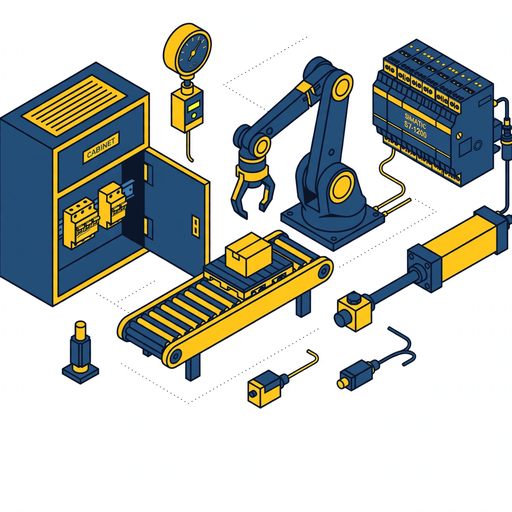

Gelb Heft 0942 B2-SM-gelb | Mechatronisches Prüfsystem
7 interaktive Module, Quiz, Memory, DGUV-V3 Check, Anlagen-Simulator
Öffnen →
60+ Fragen wie im Fachgespräch, Lösungen separat, Zufallsprüfung
Öffnen →
Für Ausbilder Sebastian Ibañez | München | S7-1214C | KTP700 | G120C